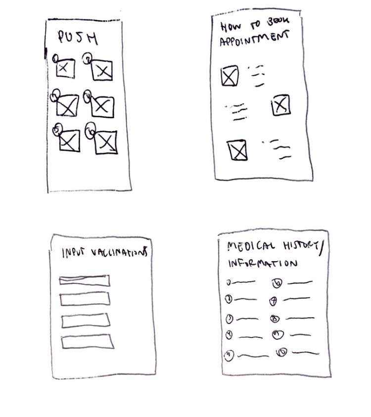
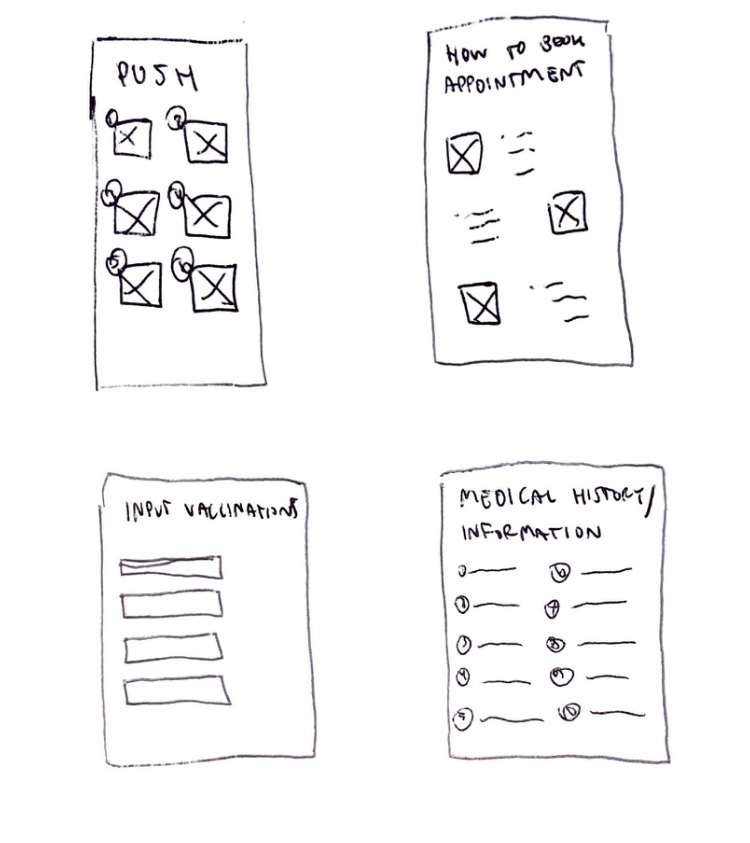

Overview
Context
During the Spring 2020 semester, our Experience Studio team at Purdue University was sponsored by DonateEquity, a consultancy and digital data company providing information on high value business owners to non-profits seeking donations. This was an open-ended project that allowed us to explore many possible avenues toward a solution.
Objective
With the rise of digital information available on the Internet, there is potential for non-profits (universities in particular) to seek out and solicit new leads for donations. Data integration and machine learning enable a new level of valuable data mining, in which non-profits could leverage to find affinities with potential donors. Therefore, we were encouraged to create a solution that would help universities identify prominent businesspeople through their existing alumni network that could give the university a donation of sizable monetary value.
Though there were many different directions we could take this project, we eventually shifted our focus towards university development officers needing a way to better connect with donors on their portfolio. From our interviews, we found that many officers were not satisfied with their university's chosen CRM tool, as it did not allow for the flexibility needed during business trips. This was an area of improvement we identified to help officers develop more personal relationships despite needing to do so with a large number of donors. As will be discussed later, the shift was warranted by a completely different problem that revealed itself during interviews.
Role
Team Lead
Duration
Spring Semester (January–May 2020)
Team Members
Zoë Morken, Brandon Dentler, Ria Sali, Allen Chen, Alex Gearhart, Ellie Kouba, Stesha Linder
Tools
Whimsical
Final Deliverables
Design documentation including research and ideation, low to mid-fidelity prototypes
How might we help university development officers maintain or strengthen relationships with their assigned donors?
Solution
A cloud-based, database tool integrated with the university’s Customer Relationship Management (CRM) system that allows for efficient creation and retrieval of contact reports as well as flexible meeting scheduling.
Meeting scheduling with donors, in list format and organized by recency.
Clicking the green pencil icon in the bottom right corner creates a new contact report. Here, officers can assign a donor to the report, jot down important notes from their meeting, include tags on the donor they can search for later, and choose to move them into a different phase of the life cycle. Contact reports are stored locally on the app until the officer decides to upload them into the CRM.
View donors by searching a name or location. Each icon represents a donor in the area. When clicked, information on that donor is pulled up, which opens into a new screen with contact preferences, necessary information and a list of the contact reports the officer has recorded on them.
My Contributions:
- Performed extensive research on current healthcare modes of communication (EMRs) to better inform self and group members and identified areas to explore further as means of tackling different barriers of communication in healthcare
- Established written problem statement for group approved by sponsors
- Ideated constantly throughout shifting problem space, created multiple technological means of communication (e.g. mobile, web) to address different contexts, and built a persona to base our Experience Map on
Design Process
Approach
For this project, we completed a series of four design sprints, each lasting two weeks. We originally intended to go through the process of user research, sketching, prototyping/building low-fidelity and high-fidelity mockups, and testing in a condensed period of time. However, because we rescoped, we revised our timeline and used each sprint instead to better understand our new focus: making meaningful and lasting connections with current donors. In doing so, our project was focused on recreating Affinity’s concept rather than building out its user interface (UI).
Sprint 1
Secondary Research
This sprint was made up of a combination of activities, which can be categorized into research and ideation. Our goals were to familiarize ourselves with how universities acquire donations, determine existing tools universities use to discover new leads, and sketch out ideas for Affinity’s interface.
Research
- Goal – to understand more about university advancement and the different business terms involved in acquiring donations.
- Overview – individually researched a breadth of topics (e.g., what motivates the act of donating, how schools build their alumni network, etc.), then put our findings in an affinity diagram to share what we discovered and determine what we still wanted to know.
Ideation
- Goal – to gain inspiration from existing customer relationship management (CRM) tools used by universities to keep track of donors by recording likes, dislikes, and questions about each.
- Overview – individually picked a popular CRM to investigate, then held a gallery walk to explore the CRMs chosen.
One of the major takeaways that we had from the information gathered during this sprint was that we had assumed alumni centers were responsible for dealing with acquiring donations. Our assumption was proved false from the interviews we conducted during this sprint . In reality, most universities have a distinct separation between their alumni engagement office and their development center. The alumni center hosts events for alumni while the development office deals with all donations and philanthropic activities.This realization has presented a new area of opportunity for us to consider when developing a solution.
Sprint 2
Interviews
The main focus of this sprint was to conduct research with our newly-identified user group: development officers at universities. From the first sprint, we learned that most universities have two, separate offices for alumni engagement and university development.
To clarify, an alumni association deals with getting alumni involved with a school’s activities (e.g., inviting them to programs, services, and events, connecting alumni through clubs and networks, providing opportunities for both career and personal growth, etc.) while a development office focuses on securing donations and promoting philanthropic activity. Because we did not recognize this distinction of departments earlier, we revised our plan for this sprint to talk to those working at university development offices, as the interviews we did up until this point were with faculty at alumni associations.
In doing so, our goal was to find saturation in our results – researching and doing as many interviews as necessary to see what development officers pinpoint as an issue – and determine whether Affinity as a tool to discover new leads would be something officers would find useful.
Process
Over the course of this sprint we conducted a total of eight in-person and online interviews. Three of these were in-person interviews with officers working at Purdue and the other five were from various colleges conducted over phone video call. Interviews were carried out through the course of this sprint in teams of two, with one person leading the interview and one person recording notes. Most of the interviews lasted from 30 minutes – 1 hour.
Participants
In-person (Purdue University)
- Senior Director of Development, College of Engineering
- Chief Development Officer, Purdue Polytechnic Institute
- Senior Director of Development, College of Agriculture
Phone / Video Call
- Development Operations Manager, Williams University
- Director of Donor Relations and Stewardship, Trine University
- Senior Development Officer, Williams University
- Entrepreneurial Management student, Ball State University
- Executive Vice President, DonorSearch
Interview Takeaways
- Identifying prospects and reaching out to major gift donors. With all alumni recorded in a university’s CRM, development officers have large pool of people to reach out to. In addition to the CRM, officers use resources from fundraising consultancies or do a Google search to view a donor’s LinkedIn.
- Maintaining a portfolio and contact report of prospective donors. Each development officer has their own way of managing their portfolio. Though all are required to log contact reports into the university’s CRM, some officers have a separate way of organizing personal notes on donors (e.g., spreadsheet, writing email drafts to oneself, etc.).
- Setting KPIs for long-term strategic planning. Since it can take up to five years for a donor to complete one round in the development cycle, KPIs are based on factors such as how many people discovered, how many donations solicited/pledged, etc.
- Maintaining meaningful and lasting relationships. Officers are able to form long-lasting relationships with their donors by practicing relationship-building techniques, such as remembering details from their last conversation, sending them articles about the university they might be interested in, or bringing gifts during their in-person meetings.
Our major takeaway from this sprint was that development officers aren’t necessarily concerned with discovering new leads. With their university’s CRM, plenty of online tools, and social media (e.g., LinkedIn) to look through, finding prospective donors is not a difficult task. Instead, we found that fostering relationships and building trust with current donors was more important. Since officers represent the university, much of their work is dedicated toward in-person visits with donors.
Sprint 3
Redefined Scope and Sketching
After each interview revealed to us the complexity involved in maintaining relationships with donors, we knew we had to redefine our problem scope. Originally, our problem statement was “to find and reach out to donors not previously on a development officer’s radar.” Due to the significance the officers placed on strengthening their already-existing connections, we realigned our problem scope to focus on managing these personal connections through emphasis on details obtained from in-person interactions.
 

Whiteboarding
With these three general directions in mind – medical checklist, medical questionnaire, and PUSH patient portal onboarding – we attempted to probe deeper into how Mia would interact if given one of these solutions. The results were negative; because these designs were all very one-sided in terms of interaction, we found that Mia would lose interest in all situations because there was no direct communication element with a provider. Furthermore, the medical checklist and PUSH onboarding solutions were more of a one-time point of contact that did not promote continued usage over our user group’s transition period.
Because of these reasons, we scrapped our ideas and scrutinized the “getting sick” phase of our Experience Map. We ideated again separately, our goal being to break down communication barriers between college patients and providers, and came back together to whiteboard as a group. In doing so, our ideas aligned much better.
Our idea: A tool implemented into the current PUSH portal that would help students determine whether they should schedule an appointment with PUSH. We felt that this addressed our scope because instead of having students worry about their illness by reading online sources – an insight we found from our Experience Map – we would have them initiate the interaction with PUSH from the beginning so that PUSH may assist them through sickness and into recovery.
- Login into the portal and first interactions with the diagnosis tool.
- Results produced and next step options the student can take.
- Notification received from the portal a day after interaction.
- Notification received from the portal a few days after interaction.
Testing
After whiteboarding our final solution, we turned to Figma to create low-fidelity wireframes. These, along with paper prototypes, were used for testing whether our design would address our chosen scope.
Figma Prototype
The goal of testing our Figma wireframes was to gauge people’s understanding and preconceived notions of “wizards” as well as determine whether these solutions would be adopted by our user group.
Takeaways
- Users found that this solution more trustworthy and reliable than searching their symptoms online.
- There was confusion with the layout of the diagnosis page.
- Users wanted a progress bar for the survey to track how their progress.
- Users preferred the term “wizard” over “chatbot.”
Concept Testing – Paper Prototype
A paper prototype was created in order to determine how best to organize our screen for symptom severity (rating the level of severity for each symptom that the patient lists).
Yellow and red paperclips: drag and drop each symptoms you have and rank them in the right order.
Chatbot: question will pop up, the user answers it, and then the next question will pop up right away (asking for severity).
Takeaways
- Participants found using sliders more intuitive.
- Users wanted three levels of severity because they felt that it was easier to rate their level of severity that way.
Final Prototype
Iterations
After presenting our final prototype to our sponsors, we made the following changes:
- Changed severity scale from sliders to numbers to make it easier to use for both the user and computer.
- Sectioned the timeline to better indicate user progress and the amount of questions that remain.
- Added percentages on the diagnoses page to emphasize that tool should be used as a suggestion.
- Hid information away on separate tabs for easy access when the user scrolls down.
- Represented physical feeling with emoticons in the notification email to eliminate potential bias toward picking a certain color.
Next Steps
We had other ideas we would like to explore further for the purposes of this project.
- Journaling: Users would have the option to write down their own thoughts and feelings about their illness when using the tool. From testing, we found that the multiple choice questions could be hindering accurate diagnosis.
- History: The patient and medical practitioner should also be able to see previous use results of the diagnosis tool.
- Driving Tool Usage: Another topic brought up during our meetings was how the diagnosis tool should be introduced. We had ideas on introducing the portal through word of mouth, during PUSH appointments, or through the PUSH website.
Summary and Design Rationale
This diagnosis tool implemented into PUSH’s patient portal is meant for students to make the first steps toward taking care of their health. Our solution encourages enhances patient-provider communication by first getting students comfortable using the portal, then scheduling an appointment when necessary.
Instead of leaving students at a loss of what to do when they get sick, we hoped that our solution would fuel their desire to be more aware of how to take care of themselves during a major transition period (home to college) in their lives.
What I Learned
Open-ended projects such as this require much careful research and planning. Though we were focused on scoping down as soon as possible, our haste ironically led us to wander around the problem space in circles.
After choosing a scope and sticking to it, most of our research was fairly traditional (secondary research, surveys, interviews). If planned better, our group would have hosted a co-design workshop to provide more deeper insights.
Though we experienced setbacks, our group was able to successfully pull together a solution that addressed a real need in our community.
Team Affinity, Spring 2020